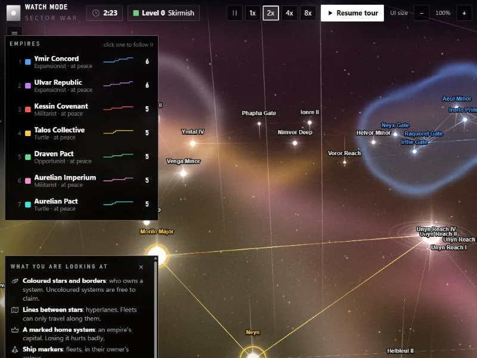

Sector War
- Problem
- Real-time space strategy with online multiplayer that has to stay in sync.
- Approach
- A deterministic engine over WebSockets for up to eight players, AI empires with their own personalities, tested with bot-vs-bot games, a headless soak runner and a Python balance model.
- Result
- 81 automated tests. The whole game also ships as one 8 MB HTML file that runs offline in any browser.